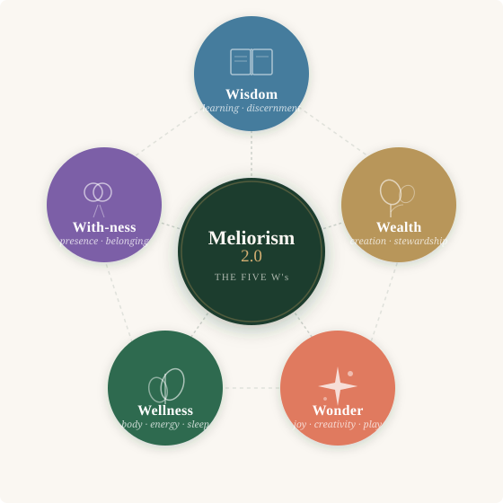

The premise
You are not a project
to be completed.
Most improvement frameworks treat you like something unfinished. They hand you a list of attributes to acquire and check off. Build this habit. Develop this skill. Cultivate this mindset.
The Five W's operate from a different premise entirely. You are already whole. Each W is a dimension of that wholeness — and what the work actually looks like is identifying what has been obscuring that dimension, and removing it.
This is not passive. The removal requires attention, honesty, and often courage. But the frame changes what you're actually doing — from building something from scratch to clearing something that's already there.
"The Five W's are not rungs on a ladder. They are rooms in a house you already live in — and the question is which one has the door stuck."
The Framework
Five dimensions.
One foundation.
The Five W's are not a ladder to climb or a scorecard to optimize. They are five dimensions of a life that is already in motion — each one a domain where something latent is waiting to be revealed.
Meliorism 2.0 brings the same Michelangelo logic to each: the better version is already present. The work is clearing what obscures it.
Scroll down to find the W that is most alive for you right now.

The Five Dimensions
Pick the W that's calling you.
Each card is a dimension, a question, and one experiment you can run this week — no commitment required.
Wellness is the foundation — the one W that affects every other W simultaneously. Not because your body is more important than your relationships or your work, but because the body is the medium. Everything you think, feel, decide, and create moves through it.
The question is rarely "what should I add" — more gym, better supplements, a new protocol. The more useful question is what has been interfering with the sleep you already know how to get, the movement your body already wants, the recovery you've been deferring.
Most people don't have a Wellness knowledge problem. They have a friction problem. Something is making the easier path harder than it should be.
One experiment
The Energy Audit
For three days, notice when your energy rises and when it drops. Not what you think should happen — what actually does. Note the time, what preceded it, what you were doing.
Ask: what is the single thing most consistently draining my physical energy that I could actually change?
With-ness is the dimension of being-in-relation — not just having relationships, but the quality of presence within them. Whether you feel genuinely accompanied, witnessed, and known. Whether the people around you are experiencing you, or just your performance of you.
There is a specific kind of loneliness that is possible in a room full of people, and even in a long marriage, and even in a successful team. It is the loneliness of not being actually seen. With-ness is the W that addresses that directly.
The subtraction question here is often about the roles and masks that have accumulated. Not because there's anything wrong with them, but because some of them have become the only way people know you — including, sometimes, yourself.
One experiment
The Unfiltered Conversation
Have one conversation this week where you say something true that you would normally soften or omit — with someone you trust. Not to unload, but to be known more accurately than you usually allow.
Ask: what part of me is consistently absent from my important relationships?
Wealth in the Meliorist frame is not about accumulation — it is about creation and stewardship. The difference matters. Wealth extraction borrows from the future; wealth creation adds to it. One is zero-sum; the other expands what is possible for everyone around you.
For most practitioners, coaches, and business owners, the Wealth obstacle is not capability. It's the conversation that hasn't happened yet — with a client about pricing, with yourself about what you actually want, with your business about which activities are genuinely creating value and which are friction wearing a productivity mask.
The question is rarely "how do I make more money." It is more often "what am I undervaluing, and why?"
One experiment
The Value Gap
List your five main professional activities ranked by time invested. Then rank them by value created — for your clients, your audience, your business. Where do the lists diverge?
Ask: where am I spending significant time on low-value activities while underinvesting in high-value ones?
Wisdom is not the accumulation of information. In an era of infinite information, that mistake is increasingly expensive. Wisdom is discernment — the ability to know what matters, what to trust, what to act on, and what to set down.
Most people reading this page have more wisdom than they are currently using. Not because they lack it, but because something is preventing them from trusting it. Competing voices, self-doubt installed by old critics, the habit of seeking another opinion before trusting one's own.
The Wisdom experiment is usually not "learn more." It is "act on what you already know."
One experiment
The Already Known
Identify one decision you've been deferring — waiting for more information, more certainty, another conversation. Assume you already know what to do. Write down what that is. Then ask: what has been preventing you from acting on it?
Ask: what am I seeking permission for that I could simply decide?
Wonder is the dimension that most people sacrifice first when life gets serious — and then spend years trying to recover. It is not frivolity. Wonder is the faculty that generates genuine insight, makes you interesting to other people, and sustains you through work that is otherwise hard.
The person who has lost Wonder is still functional. They can hit targets, deliver results, meet commitments. But something in them has flattened. They are no longer surprising to themselves, which means they stop surprising anyone else. The edge that came from genuine curiosity — the one that made their work feel alive — has dulled.
Wonder doesn't require travel, sabbaticals, or a complete life redesign. It usually requires recovering small permissions: to try something without knowing if it will work, to be genuinely bad at something for a while, to follow curiosity past the point where it's useful.
One experiment
The Useless Hour
Protect one hour this week for something with no measurable outcome. Not "mindfulness" as productivity optimization. Something you used to love, something you've been curious about, something that has no business case. Note what happens in the days after.
Ask: what did I stop doing because I thought I should be doing something more important instead?
The Subtraction Question
What is actually
in the way?
Across all five W's, the most useful question is the same: what is currently obscuring this dimension of your life, and is it something that can be removed?
Sometimes the answer is structural — a schedule that crowds out sleep, a pricing model that undervalues your work, a communication pattern that keeps people at arm's length.
Sometimes it's internal — a belief installed decades ago, a story you've been telling that stopped being accurate, a role you've been performing that you never consciously chose.
Either way: the capacity was already there. The work is getting to it.
Five questions worth sitting with
- Which W has the most space for something to be removed rather than added?
- What have I been tolerating so long it no longer registers as a problem?
- Where am I working harder than the situation actually requires?
- What would I stop doing if I genuinely believed I had permission to?
- What is the kindest thing I could subtract from my current week?
Want to go deeper with one of these?
Brian works directly with coaches, trainers, and business owners on exactly this kind of clarity work.